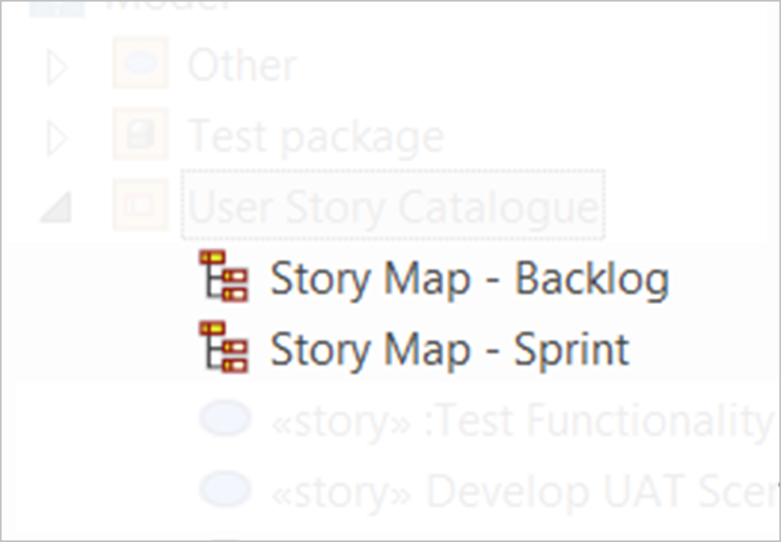
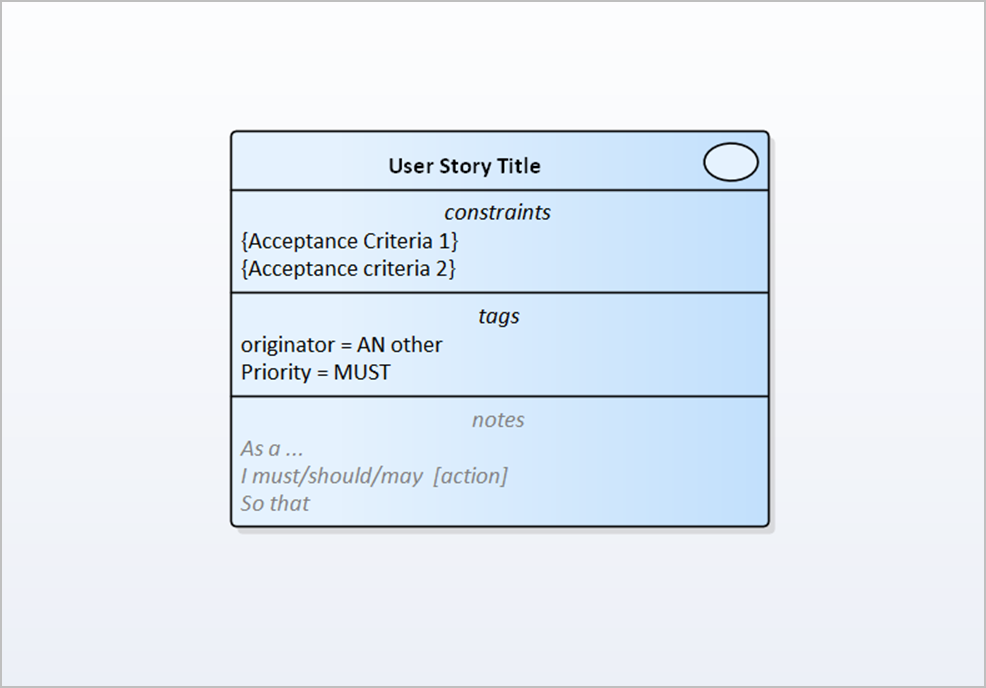
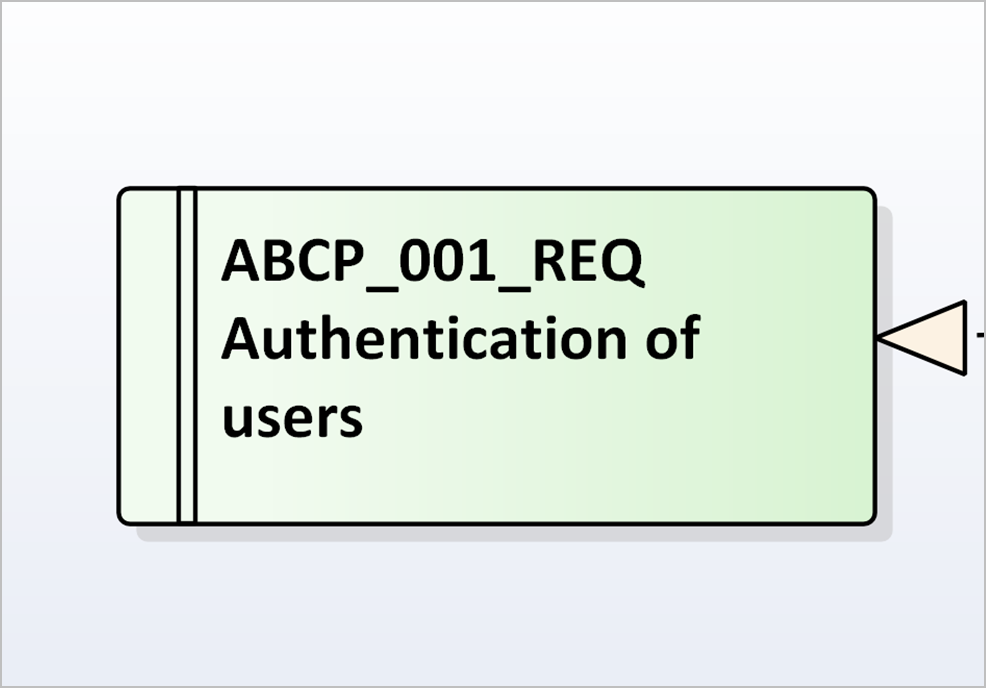
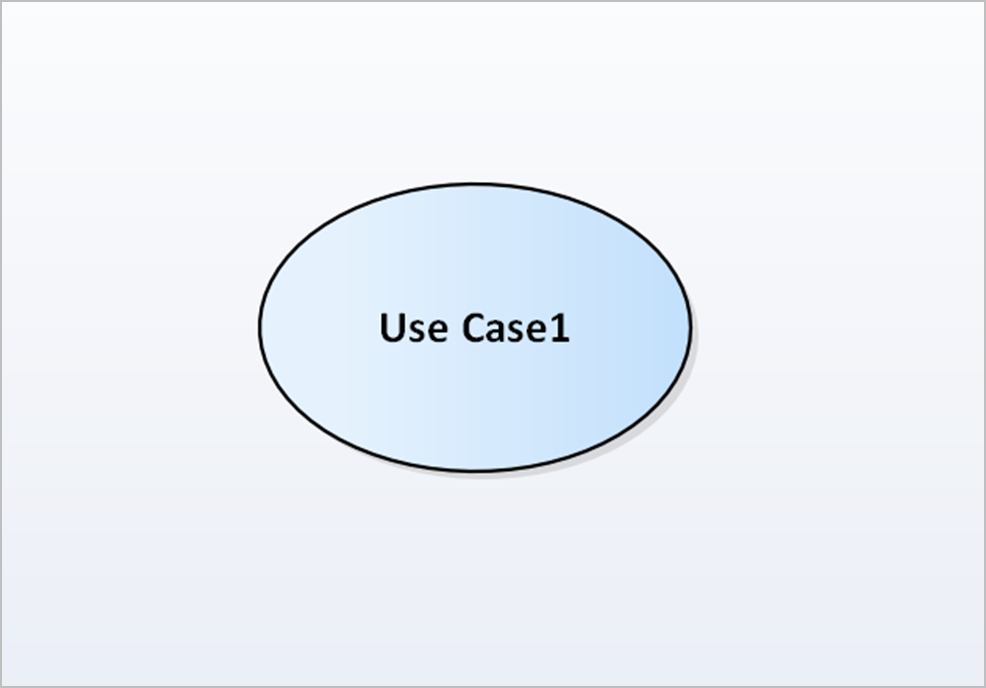
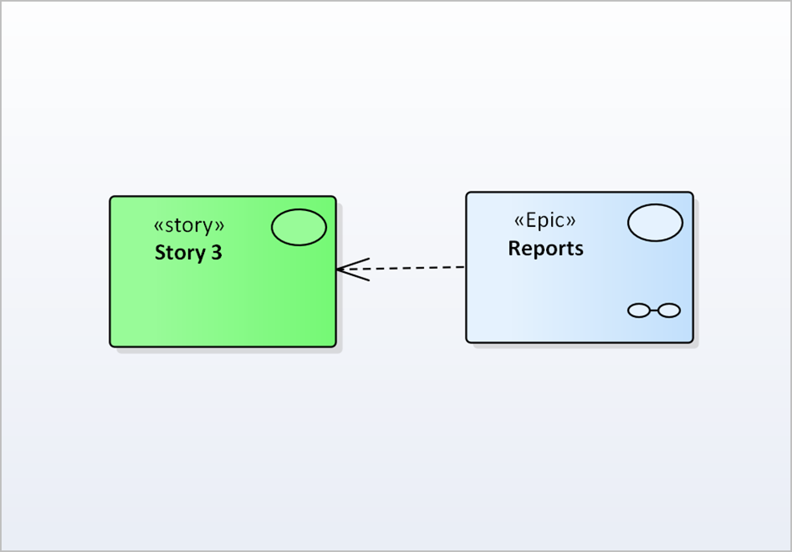
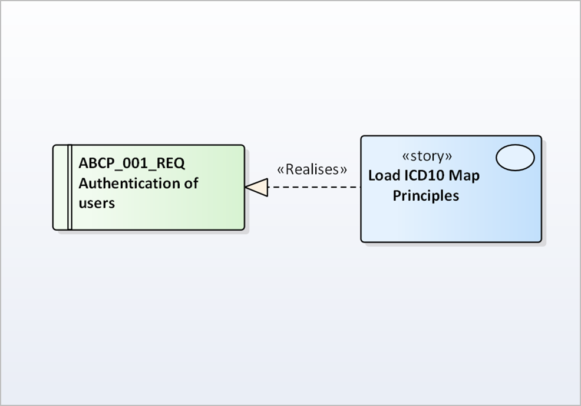

Story Map Artefact (Adopted Notations)
ArtUseStorMapAN Story Map Artefact (Adopted Notations)
Amendments History
| Date | Author | Amendment | Status |
|---|---|---|---|
| April 2017 | Kevin John | Topic created to migrate Rapid Content into the AG | Draft |
|
Entity |
Definition / Context |
Core Notations |
|||||||||
|---|---|---|---|---|---|---|---|---|---|---|---|
|
Diagram Name:

|
“Story Map diagram names, as held within the User Story Catalogue.” |
The name of the diagram should reflect its intended scope and / or theme.
The name of a Story Map for a Sprint should include that of the Sprint it describes.
|
|||||||||
|
Story Element:

|
“Story Elements are articulated within the analysis model as Use Case elements, using the rectangle notation.” |
Created by using Use Case elements with Rectangle notation.
Stereotypes can be user to distinguish Story type:
The element name may contain the Story Title.
The Use Case element notes and metadata can be displayed.
|
|||||||||
|
Requirements Elements:

|
“ Requirements Elements are used to articulate single requirements within an Analysis Model.”
In the context of the Story Map, Requirements elements can be used where they are previously agreed and of sufficient detail
for developers or testers.
|
Represented as rectangular box elements, can be divided into a number of sections:
|
|||||||||
|
Use Case Elements:

|
“Use Case Elements individually define a discrete process. The completion of that process should return an observable result.”
In the context of the Story Map, Use Cases can be used where they are previously agreed and of sufficient detail for developers
or testers.
|
The Use Case element has an ellipse notation.
The name of the Use Case is inside the ellipse.
The name should be a meaningful expression (verb / phrase) in the context of the domain.
The use case element metadata can contain:
|
|||||||||
|
Directed Association:

|
“A Directed Association is a directional dependency association directed from one Story to another element.”
The purpose of a Directed Association is to show traceability between elements.
A Story may be derived from many elements and an element may in-turn be used to derive many Stories. |
A directional dependency association
The optional stereotype <<derived from>> may also be used.
This association is denoted by a dashed line with an open arrowhead, between elements.
|
|||||||||
|
Realization / Realize Association:

|
“Realization / Realize Association is a directional association pointing from a Story element to another element type, that
it realises”
This association is used to identify where a story element ‘realises’ or implements the goals / aims or specifications of
another element type (e.g. where the Story realises a Requirements Element).
|
A Realize Association is represented as a dashed line with solid arrow.
The optional stereotype <<realises>> may also be used.
The source elements realises the destination element.
|
|||||||||
|
Boundary Regions:
 |
“Boundaries can be used to show element groupings, for example highlighting which Stories are to be developed.” |
A boundary is a rectangle shape use to represent the system.
The relevant elements are inside the boundary region.
The use of Boundary Regions is optional.
It can be labelled to describe the context for the boundary.
|
|||||||||
|
Colour coding of elements:
(see above images)
|
“Colour can be used to differentiate Story or element types. For example: Green for User Stories and Blue for Epic Stories.” |
The use of colour to differentiate Story types is optional.
|